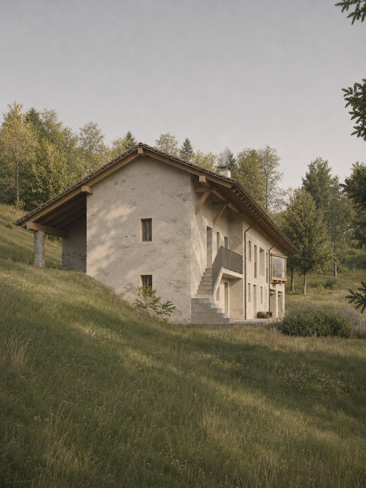
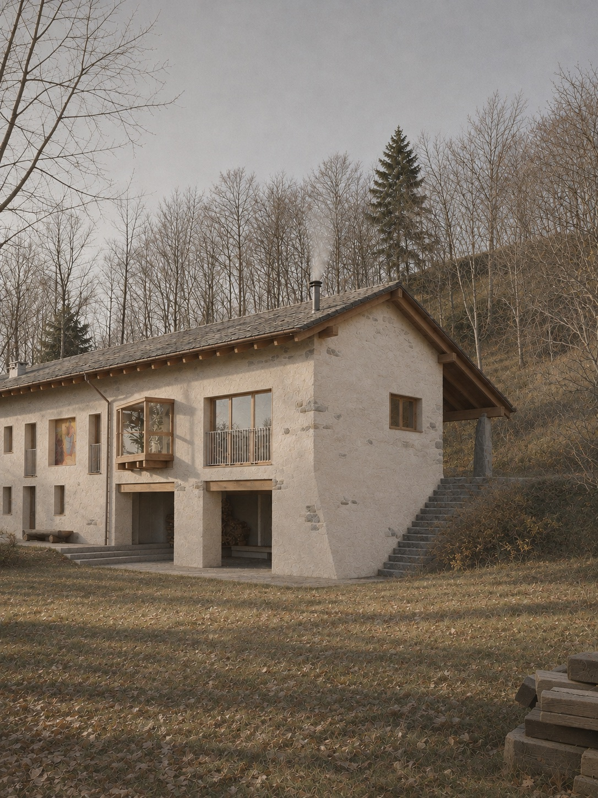
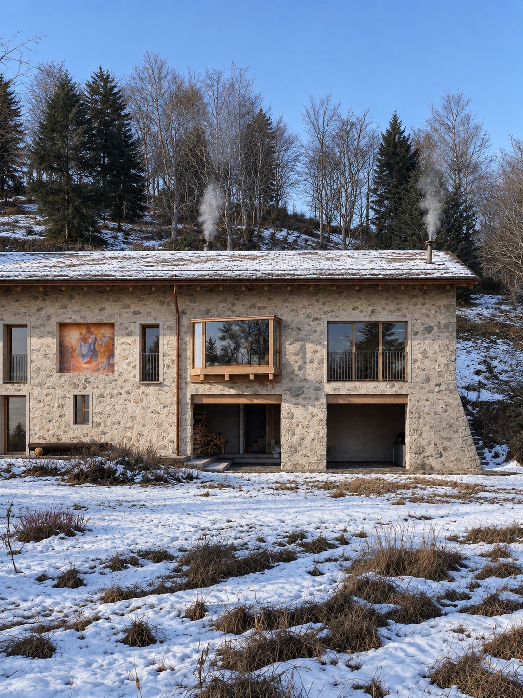
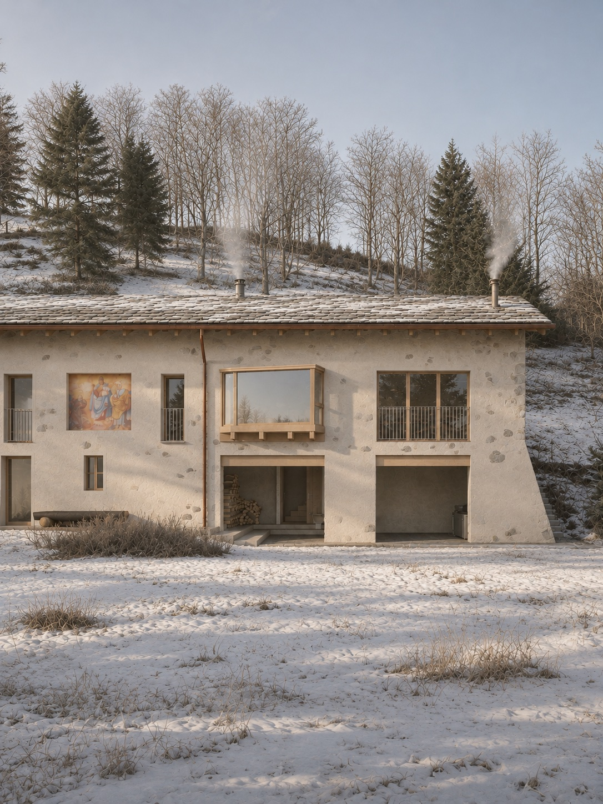
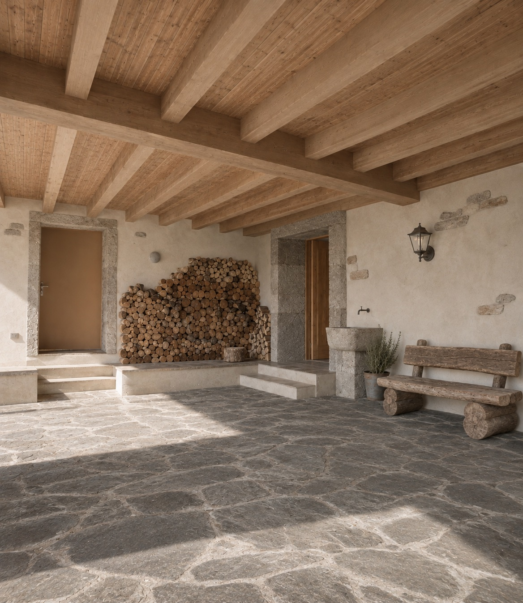
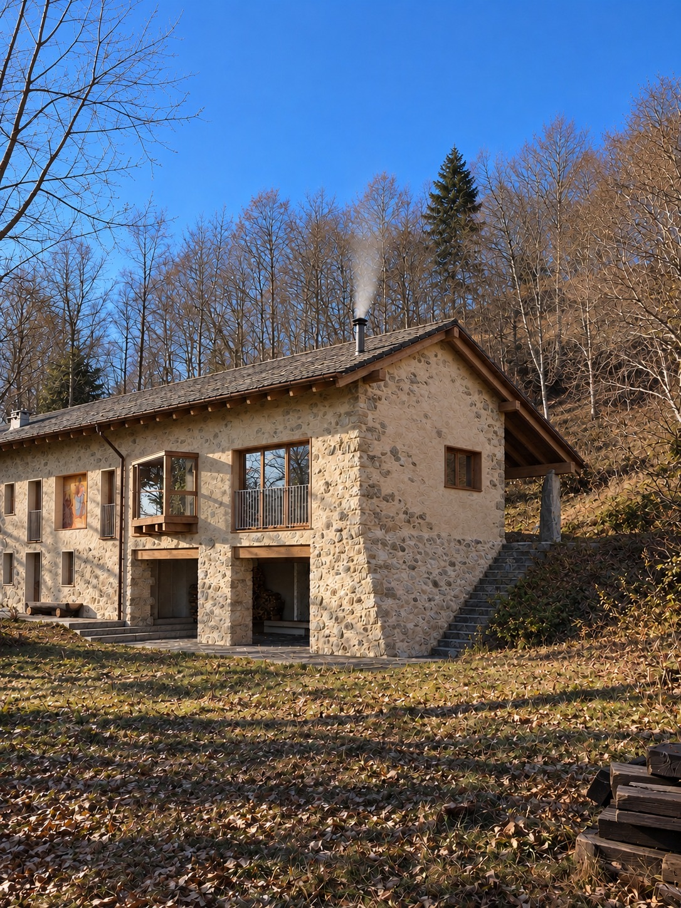
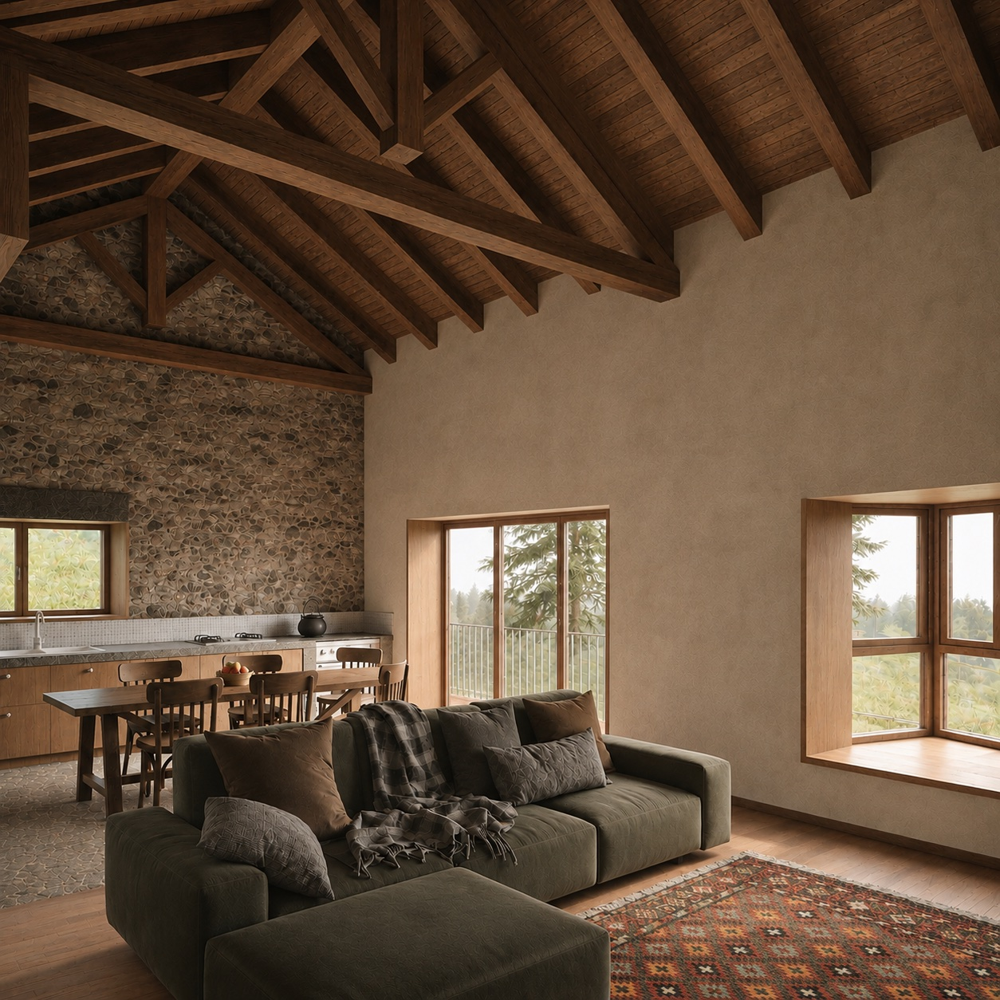
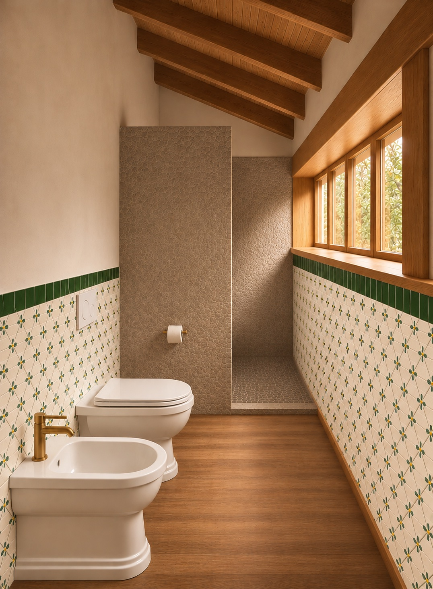

Casa Foglia
- Location
- Caprile (BI)
- Year
- 2026 – ongoing
The project concerns a building of rural origin, next to a rustic barn once used as a hayloft. It rethinks the organisation of the two levels, giving the ground floor to spaces for maintenance and hobbies, alongside a wide porch, and the first floor to the living spaces.
The barn is recovered and turned into the living room and kitchen. Uphill, a new volume is dug into the ground to hold the services and ancillary spaces. A new roof pitch gathers the different rooms under a single architectural profile.
The project keeps the forms and materials typical of local architecture, seeking a dialogue with the original character of the building. The one exception is the bay window of the living room, deliberately in contrast with the traditional language of the project.
This architectural device projects the interior towards the valley, opening it to the surrounding landscape. Although it is on the first floor, the living room gains a new depth: a kind of domestic observatory that relates living to the land.







